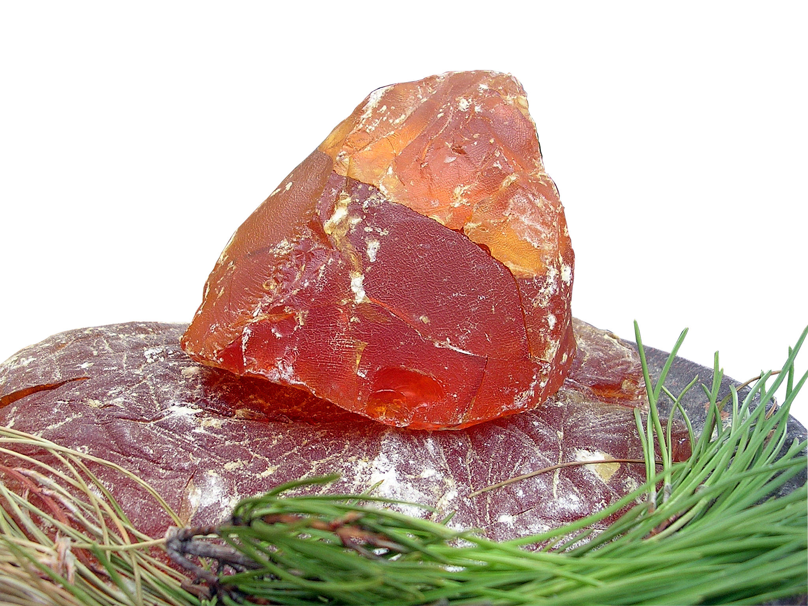
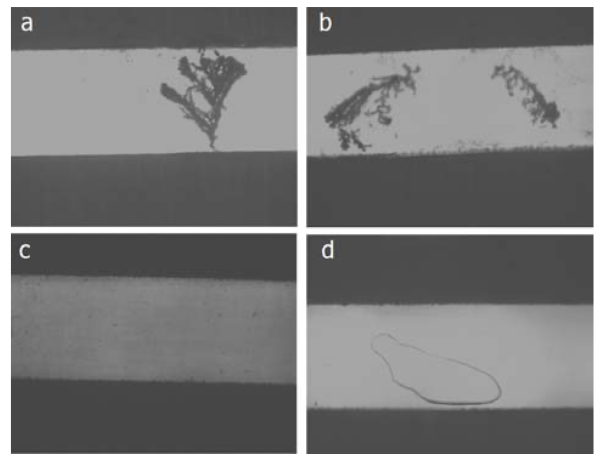

Flux — The Invisible Essential
Without flux, solder will not bond to copper. The oxide layer on copper reforms in seconds at soldering temperatures. Flux continuously removes oxides during the soldering process.
Figure: Natural rosin — the base material for most flux

The 4 Jobs of Flux
- Oxide removal — Metal oxides are non-metallic barriers. Flux acids (primarily abietic acid, 70-85% of rosin) dissolve them when heated.
- Surface tension reduction — Acts as a surfactant. Can reduce solder surface tension by up to 50%. Solder spreads instead of balling up.
- Oxidation barrier — After removing oxides, forms a protective blanket over clean metal, preventing re-oxidation.
- Heat transfer — Liquid flux bridges air gaps between iron tip and joint surfaces, improving thermal coupling.
Dry joints happen when flux burns off before solder flows. Adding more solder (with flux core) to a failing joint often fixes it — not because you needed more solder, but because you needed fresh flux.
Flux Types
| Type | Activity | Must Clean? | Use Case |
|---|---|---|---|
| Rosin (R) | Lowest | No | Already-clean surfaces |
| Rosin Mildly Activated (RMA) | Low | Usually no | General through-hole |
| Rosin Activated (RA) | High | YES — corrosive | Oxidized surfaces |
| No-Clean | Low-Med | No* | Most modern electronics |
| Water-Soluble (OA) | Highest | YES — highly corrosive | Production lines with wash |
* Must clean if conformal coating will be applied.
IPC J-STD-004 Classification
Replaced old MIL specs. 4-character code:
Halides: The 0 vs 1 Practical Difference
The last character in the J-STD-004 code — 0 (halide-free) vs 1 (contains halides) — is the single most important choice after activity level.
- Halides (chlorides, bromides) are powerful oxide breakers. They crack through heavy oxidation that organic acids alone can't touch. A halide-containing flux (ROL1, ROM1) will wet surfaces that a halide-free flux (ROL0, ROM0) won't.
- The tradeoff: halide residues are ionic. If left on the board, they attract moisture and create conductive paths between traces — the same dendritic growth problem as uncleaned RA flux, just slower.
- Halide-free (x0) — safer residue. The standard choice for no-clean applications where you won't wash the board. Slightly less aggressive oxide removal.
- Halide-containing (x1) — more aggressive. Better for oxidized surfaces, old components, and difficult-to-wet finishes. But residues are more of a concern — should be cleaned for high-reliability work, even if the flux is nominally "no-clean."
In practice: ROL0 or REL0 for everyday no-clean work. Step up to ROL1 or ROM1 when surfaces are oxidized and ROL0 won't cut it. Step up to ROH1 (RA) only when nothing else works — and always clean afterward.
Old to New Mapping
| Old Name | J-STD-004 | Notes |
|---|---|---|
| R (Rosin) | ROL0 | Lowest activity, no halides |
| RMA | ROL1 / ROM1 | Low or moderate activity, both with halides |
| RA | ROH1 | High activity, with halides |
| No-Clean | ROL0 / REL0 | Rosin or synthetic |
| Water-Soluble | ORH1 / INH1 | Always requires cleaning |
Activation Temperatures
| Type | Softens | Fully Active | Notes |
|---|---|---|---|
| Rosin-based | 60-70°C | 172-175°C | Inactive at room temp |
| No-clean | ~140°C | 200-250°C | Narrower effective window |
| Water-soluble | Lower | Broad range | Product-dependent |
Figure: Abietic acid — the active ingredient in rosin flux
Figure: Dendritic growth from flux residue

Flux activity increases with temperature until decomposition. Most rosin flux chars above ~350°C — this is why iron temp matters. Too hot and you burn the flux before it can do its job. The soak zone in reflow profiles exists specifically to let flux activate and clean the surfaces before hitting reflow temperature.
Flux Forms — How to Apply It
The same flux chemistry comes in different physical forms. The form determines how you apply it, how long it lasts on the shelf, and what it's good for.
| Form | What It Is | Best For | Shelf Life | Notes | ||
|---|---|---|---|---|---|---|
| Flux-core solder wire | Flux is inside the wire — melts out as you solder | Hand soldering — built-in flux delivery | Years (wire is sealed) | The flux you use most. 2-3% core is standard. You'll still need external flux for rework and oxidized surfaces. | ||
| Flux pen | Felt-tip marker filled with liquid flux | Quick application to pads before soldering. Rework. Touch-up. | 3-12 months once opened | The most convenient form for hand work. Dries out if left uncapped — always recap immediately. Some pens have a valve tip (click to dispense) that lasts longer. | ||
| Syringe (liquid) | Liquid flux in a syringe with a dispensing needle | Precise application. Under ICs before rework. Flooding pads for drag soldering. | 6-12 months | More precise than a pen, more flux per application. Plunger-type lasts longer than pen because less air exposure. | ||
| Syringe (gel/paste flux) | Thick, tacky flux in a syringe | Stays where you put it — won't run. Good for vertical surfaces, SMD rework, applying to specific pads. | 6-12 months | Thicker than liquid — won't wick under components as easily. Best for targeted application. | Not the same as solder paste | — this is flux only, no metal powder. |
| Tub / jar | Paste flux in a wide container | Dip soldering. Tinning wire ends and component leads. High-volume rework. | 12-24 months sealed | Longest shelf life of any open-use form. Dip the iron tip or component lead directly into the tub. Rosin paste flux in a tub is essentially indefinite if kept sealed — the rosin is a natural preservative. | ||
| Solder paste (flux + metal) | Flux medium with suspended solder powder | SMD reflow. See Solder Paste. | 6 months refrigerated | Not "flux" in isolation — it's a complete soldering material. Shortest shelf life because the metal powder oxidizes. |
Start with two things:
- A flux pen (no-clean, ROL0 or REL0) — for everyday hand soldering. Kester #186 or MG Chemicals 835-P are good choices. ~$8-12.
- A syringe of gel flux (no-clean) — for rework, drag soldering, and any time you need flux to stay put. Chip Quik SMD291 is popular. ~$8-15.
Add a tub of rosin paste flux if you do a lot of wire tinning or through-hole rework. It lasts forever and is the most cost-effective form per gram.
Storage and Shelf Life
Flux degrades. The activators oxidize, the solvents evaporate, and the viscosity changes. How fast depends on the form and storage conditions.
| Form | Sealed Shelf Life | Open/Working Life | Storage | Signs of Degradation |
|---|---|---|---|---|
| Flux-core wire | 5+ years | Indefinite (sealed in the wire) | Sealed bag with desiccant. Room temp. | Solder spatters more than usual — flux core has absorbed moisture. Solder doesn't flow as smoothly — flux is inactive. |
| Flux pen | 12-18 months | 3-12 months | Room temp, cap on tight. | Tip dries out, won't dispense. Flux is discolored or thick. Apply to a hot pad — if it doesn't bubble and activate, it's dead. |
| Liquid syringe | 12-18 months | 6-12 months | Room temp, cap on needle. | Discolored, crystallized, or separated. Won't spread evenly. |
| Gel/paste syringe | 12-18 months | 6-12 months | Room temp, cap on. | Dried out, won't extrude smoothly, or has skin on the tip. |
| Tub (rosin paste) | 2+ years | 12-24 months | Room temp, lid on. | Surface crust forms (scrape off — flux underneath is fine). If the entire tub is dry/hard, it's done. |
| Solder paste | 6 months | 8-12 hrs on stencil | Refrigerate 0-10°C. See Solder Paste. | Won't print cleanly, grainy texture, separated, or solder doesn't coalesce during reflow. |
The common pattern: less air exposure = longer life. Flux-core wire lasts essentially forever because the flux is sealed inside metal. A tub with a tight lid lasts years. A pen with a felt tip exposed to air dries out in months. A syringe falls in between.
Dead flux is the most common hidden cause of bad joints. The flux looks normal, you apply it, but nothing improves — because the activators are spent. If your flux is older than a year and you're having wetting problems, try fresh flux before blaming the iron, the board, or the solder. A new $8 flux pen solves more problems than most people realize.
Flux is hygroscopic — it absorbs moisture from the air. Moisture in flux causes spattering when it hits soldering temperatures (water flash-boils at 100°C, well below flux activation). Store all flux forms sealed. If you're in a humid climate, consider keeping flux pens and syringes in a sealed bag with a desiccant packet between uses.